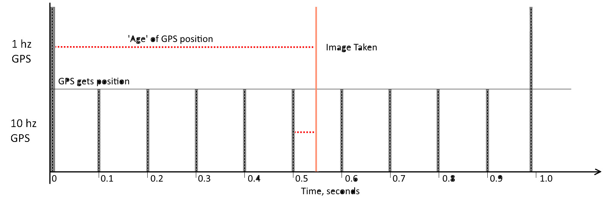
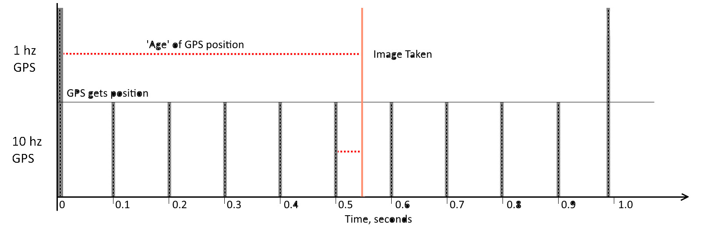

Will Wi-Fi interfere with other transmitters on my drone?
It will not. Wi-Fi is only used to configure the sensor before the flight, and to retrieve images after. During the flight Wi-Fi is disengaged, and does not occupy the spectrum.
Will Wi-Fi interfere with other transmitters on my drone?
It will not. Wi-Fi is only used to configure the sensor before the flight, and to retrieve images after. During the flight Wi-Fi is disengaged, and does not occupy the spectrum.
Will we have atmospheric correction?
Eventually. We plan to make a module for Anywave, it would be similar to the light sensors it uses currently, but instead of measuring overall light levels it would consist of many tiny light sensors, each measuring the exact same channels Anywave is imaging. When released, it will be compatible with current version of Anywave, after a software update.
Will we have atmospheric correction?
Eventually. We plan to make a module for Anywave, it would be similar to the light sensors it uses currently, but instead of measuring overall light levels it would consist of many tiny light sensors, each measuring the exact same channels Anywave is imaging. When released, it will be compatible with current version of Anywave, after a software update.
Why does it have fewer megapixels than a mobile phone?
That’s because marketing department of camera companies counts like
Mpixels = Red pixels + Green Pixels + Blue pixels
We count like Mpixels = (Red pixels + Green pixels + Blue pixels) ÷ 3
A 16 megapixel camera only has 8 million green pixels, 4 million blue pixels, and 4 million red pixels. For every spot on the image, the camera only knows one out of three colours. The raw (hence the format, RAW) image looks like this. To get 16 MP images, cameras do something called interpolation: for every pixel, the missing colours are estimated using information from the nearby pixels. This is fine for producing photographs, but it will not produce a scientific measurement. Without this process, your 16MP camera would be producing 4 MP photographs.
Anywave has a separate sensor dedicated to each channel. In the resulting images each pixel has a real measurement for every colour/channel. If we counted the Megapixels the way ‘normal’ cameras do, a 6 channel Anywave would have resolution of 17 Megapixels.
Why does it have fewer megapixels than a mobile phone?
That’s because marketing department of camera companies counts likeMpixels = Red pixels + Green Pixels + Blue pixels
We count like Mpixels = (Red pixels + Green pixels + Blue pixels) ÷ 3
A 16 megapixel camera only has 8 million green pixels, 4 million blue pixels, and 4 million red pixels. For every spot on the image, the camera only knows one out of three colours. The raw (hence the format, RAW) image looks like this. To get 16 MP images, cameras do something called interpolation: for every pixel, the missing colours are estimated using information from the nearby pixels. This is fine for producing photographs, but it will not produce a scientific measurement. Without this process, your 16MP camera would be producing 4 MP photographs.
Anywave has a separate sensor dedicated to each channel. In the resulting images each pixel has a real measurement for every colour/channel. If we counted the Megapixels the way ‘normal’ cameras do, a 6 channel Anywave would have resolution of 17 Megapixels.
What is the real accuracy of your GPS?
When stationary, and with good signal you have 50% chance (CEP50) of getting a position within 1.5 meters your actual location, and 95% chance of getting a position within 3.1 meters. The receiver works with both GNSS and GPS satellites with 32 channels, and we supply a good antenna to maximise your chances of getting good signal.
Of course drones are not stationary. Vast majority of GPS receivers update their position once a second. If you drone is flying at a moderate 40 km/h, it will travel 11 meters in one second. When you use such GPS to geotag an image, it could be off by many meters!

That’s why Anywave uses the highest-speed GPS receiver we could get our hands on. It updates position 10 times per second and minimises these errors.
At the end of the day what we need is not a single image, but a 3D model or an orthomosaic that is accurately geo-referenced. In producing them 3D reconstruction software matches hundreds of images pixel by pixel, and combines all geotags to obtain more accurate location and orientation. Random errors cancel each-other out, while systematic ones such as using out of date GPS position, do not.
What is the real accuracy of your GPS?
When stationary, and with good signal you have 50% chance (CEP50) of getting a position within 1.5 meters your actual location, and 95% chance of getting a position within 3.1 meters. The receiver works with both GNSS and GPS satellites with 32 channels, and we supply a good antenna to maximise your chances of getting good signal.Of course drones are not stationary. Vast majority of GPS receivers update their position once a second. If you drone is flying at a moderate 40 km/h, it will travel 11 meters in one second. When you use such GPS to geotag an image, it could be off by many meters!

That’s why Anywave uses the highest-speed GPS receiver we could get our hands on. It updates position 10 times per second and minimises these errors.
At the end of the day what we need is not a single image, but a 3D model or an orthomosaic that is accurately geo-referenced. In producing them 3D reconstruction software matches hundreds of images pixel by pixel, and combines all geotags to obtain more accurate location and orientation. Random errors cancel each-other out, while systematic ones such as using out of date GPS position, do not.
Will GPS on Anywave interfere with GPS already installed on my drone?
No, GPS receivers are passive, meaning they only ‘listen’ and do not ‘talk’ back to the satellites. You can have any number of GPS active at the same time.
Will GPS on Anywave interfere with GPS already installed on my drone?
No, GPS receivers are passive, meaning they only ‘listen’ and do not ‘talk’ back to the satellites. You can have any number of GPS active at the same time.
What are the limitations of the GPS?
You shouldn’t have issues unless you are mounting Anywave on a rocket. Standard COCOM limits apply, GPS will keep working unless you exceed one of the following:
- velocity greater than 515 m/s AND altitude above 18,000 m
- altitude: 100,000 m (max) or -1500 m (min)
- speed: 600 m/s
- acceleration: 2g
What are the limitations of the GPS?
You shouldn’t have issues unless you are mounting Anywave on a rocket. Standard COCOM limits apply, GPS will keep working unless you exceed one of the following:- velocity greater than 515 m/s AND altitude above 18,000 m
- altitude: 100,000 m (max) or -1500 m (min)
- speed: 600 m/s
- acceleration: 2g